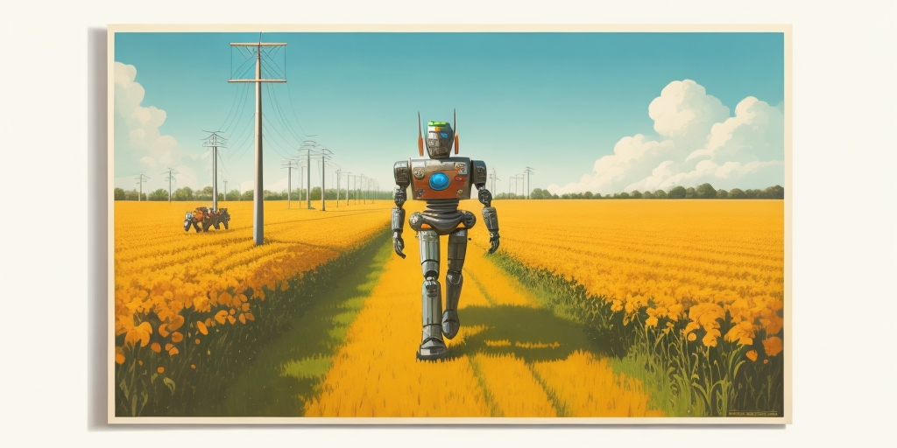
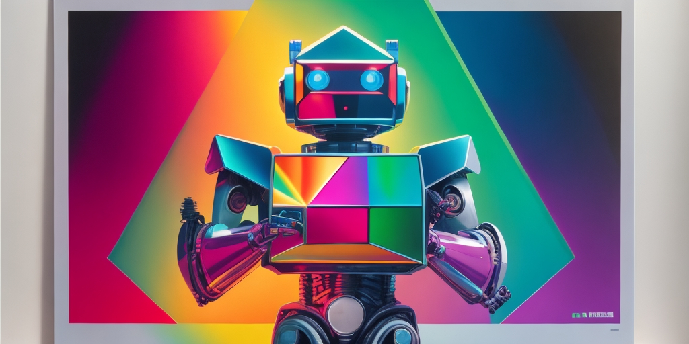

About Me
I am a data scientist and software engineer with a strong track record of success in developing and deploying machine learning and artificial intelligence solutions. I have experience in a variety of industries, including telecommunication, automative, and astronomy. I am passionate about using AI to solve real-world problems and make a positive impact on the world.
I am proficient in a variety of programming languages, including Python, JavaScript, and C++. I am also familiar with a variety of machine learning and AI frameworks, including TensorFlow, PyTorch, and Scikit-Learn.
I am a highly motivated and results-oriented individual with a strong work ethic. I am also a team player and I am always willing to go the extra mile.
I am eager to find a challenging and rewarding position where I can use my skills and experience to make a difference.
CV
Project Timeline
You can see each individual project I have completed, with the technologies I have used to create them.
Web ApplicationChatGPT Form Filler
ChatGPT based form filling web application. Due to client confidentiality, specific project details cannot be disclosed.
Technologies: Python, JavaScript, Flask, ChatGPT, HTML, CSS, Postgre-SQL
Machine LearningFaulty Cable Detection
Crafted a faulty cable detection system with fault classification capabilities using deep convolutional networks, which became a finalist project for TM Forum’s Excellence Awards 2023. Winners will be announced in September 2023.
Technologies: Python, Tensorflow, Genetic algorithms, Weights & Biases
Computer VisionHardware Location Monitoring System
Rapidly created a satellite imagery-based hardware location monitoring system in response to the 2023 Turkey-Syria earthquake crisis. Implemented the program within a day to support operator crews working in affected cities.
Technologies: Python, OpenCV, Maxar, Numpy
Machine LearningLandline Battery Life Prediction
With the mobile application becoming a hit, I developed a similar software for the landline infrastructure for Turk Telekom.
Technologies: Python, Pyspark, Random Forest, Genetic algorithms
Machine LearningMobile Cell Tower Battery Life Prediction
Created a remaining battery life prediction algorithm for Turk Telekom mobile cell towers using Random Forest and genetic algorithms. The project became very succesful and enabled efficient allocation of over 30M Euro worth of battery investment annually.
Technologies: Python, Pyspark, Random Forest, Genetic algorithms
Machine LearningFaulty Hardware Prediction
Used statistical models to predict faulty hardware from active device alarms for Turk Telekom.
Technologies: Python, Pyspark, Scikit-Learn
Computer VisionRouter Malfunction Detection
I led a small team of five, including myself, we created a PoC for Router malfunction detection software for Turk Telekom using YOLO and EfficientNet.
Technologies: Python, Pytorch, OpenCV, Numpy
Machine LearningRoaming Data Anomaly Detection
Created an anomaly detection mechanism for roaming data usage to improve the roaming services of Turk Telekom.
Technologies: Python, PySpark, Numpy, Plotly
Data ScienceCell Site Hardware Control Scheme
Developed an algorithm to keep track of cell site hardware of Turk Telekom using various data sources and operator email feedbacks, with an alarm system on anormal hardware change.
Technologies: Python, PySpark, Numpy
Machine LearningNetwork Hardware Predictive Maintenance System
Developed an statistical model to predict faulty network hardware group using hardware alarms, created the network topology tree with alarm visualizations to assist field operators of Turk Telekom.
Technologies: Python, PySpark, Numpy, Graphviz
Natural Language ProcessingDepartmant Classification on Customer Complaints
Developed a NLP project using BERT to classify and report indvidual complaints of customers (on sikayetvar.com) to the related departments of Turk Telekom.
Technologies: Python, Pytorch, HuggingFace, Transformers
Reinforcement LearningMARL: Homogeneous vs Heterogeneous
Wrote a comperison paper in th topic Multi Agent Reinforcement Learning about Homogeneous and Heterogeneous compering them in both cooperative and competitive environments
Technologies: Python, Pytorch, Gym, PettingZoo
Computer VisionOCR in the wild: Tire Quality Control
Developed the backend of a tire version quality control software, which is used to automatically control the dates and symbols branded on manufacturing process.
Technologies: Python, OpenCV, Pytorch, Numpy, OCR
Computer VisionLaser Profiler & Precise Measurement Application
Developed the backend of a laser profiler product, with a car tire manufacturing quality control application.
Technologies: Python, OpenCV, Pytorch, Numpy
Computer VisionObject Classification w/ NVIDIA Jetson & EfficientNet
Developed the next object classifier algorithm of an AI powered screwdriver (A different version).
Technologies: Python, OpenCV, Pytorch, Numpy

Computer VisionObject Detection w/ NVIDIA Jetson & YOLO
Developed the 3D position estimation algorithm of an AI powered screwdriver.
Technologies: Python, OpenCV, Pytorch, Numpy
Game DevelopmentJouster Game
Developed the Cyclone Physics engine for my Graduate School course, created a demo jousting game with the physics engine
Technologies: C#, Unity
Reinforcement LearningCoinworld: A RL Environment
Developed a Reinforcement Learning environment for trading crypto currencies. Tried several algorithms to beat the environment with no luck
Technologies: Python, Pytorch, Pandas, Numpy, Time Series
Reinforcement LearningGround Telescope Mirror Control with RL
Developed an algorithm utilizing Deep Deterministic Policy Gradient to optimize ground telescope imaging performance, presented at EuroCC Winter School 2021
Technologies: Python, Pytorch, Numpy, Soapy, DDPG
Machine LearningBinary Star Detection
Created an unsupervised clustering model to detect binary stars from time series data.
Technologies: Python, Scikit-Learn, Numpy
Big Data Milkyway Star Mapping
Created a 3D map of the galaxy to observe spiral arms of the Milkyway, using GAIA data.
Technologies: Python, SQL, HDF5, Big Data
Machine LearningSDDS Object Classification
Classified objects in Sloan Digital Sky Survey data utilizing XGBoost, presented at 1stWorkshop on High Performance Computing & Applications, Middle East Technical University
Technologies: Python, SQL, XGboost

Heuristic AIJupiter: A Heads-Up Poker AI
Wrote the Heads-Up poker game with playing and learning agents. Agents optimized their heuristic parameters while playing against each other.
Technologies:Python, Heuristic AI
Machine LearningSpectral Beam Splitting with CNN
Applied Convolutional Neural Networks to achieve spectral splitting and light concentration, presented at Fotonik 2019, Koç University
Technologies: Python, Tensorflow, Numpy, CNN
RoboticsRobotic Hand w/ Controller Glove
An Arduino robotic hand project. A robotic hand and a glove with sensors to control it.
Technologies: Arduino, Embedded Systems, Robotics